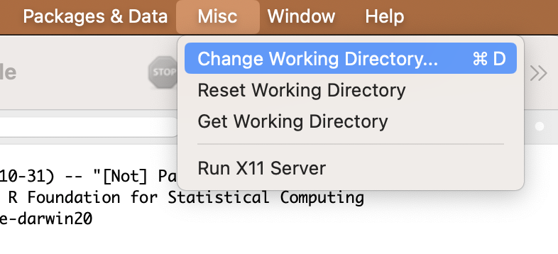
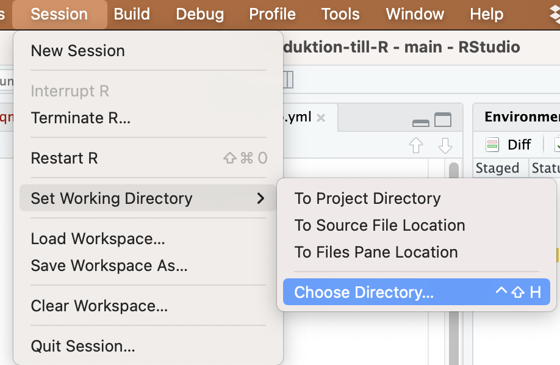

Code
getwd()[1] "/Users/martin.lind/git_projects/Introduktion-till-R/tutorials/read-data"Det första steget, innan man gör en statistisk analys, är alltid att läsa in data i R.
Vi kommer att gå igen följande:
Hur man läser in datafiler i R
Översikt över vanliga filtyper som R kan läsa in, vilket är beskrivet i delen om Dataformat
Det finns många sätt att läsa in en fil, det beror dels på om du använder R eller R Studio, men också på om du vill dokumentera vad filen heter och var den är placerad (rekommenderas för reproducerbarhet). Slutligen kan valet bero på om du använder R-projekt eller inte.
Nedan kommer vi gå igen följande metoder:
| Metod | Beskrivning |
|---|---|
| Relativ sökväg till filen | Du anger först vilken mapp din fil ligger i (din Working Directory) och sedan vad filen heter |
| Absolut sökväg till filen | Du anger exakt var filen ligger på din hårddisk och vad den heter |
Vilken metod man använder är en smaksak, båda metoderna är vanliga och man bör känna till båda.
Med relativ sökväg menas att du först anger vilken mapp filen ligger i, och sedan vad filen heter.
Ladda ner följande fil testdata_v2.txt (högerklicka, välj “spara länk som”) och spara filen på din hårddisk i en mapp med ett lämpligt namn.
Nästa steg är att tala om för R var på din hårddisk du har sparat filen, dvs vad som är sökvägen till mappen som filen ligger i. Sedan kan du tala om för R vilken fil i mappen du skall läsa in.
Platsen du befinner dig just nu är din Working Direcory, och du kan själv bestämma vad som är din Working Directory. Troligtvis har du alla filer som tillhör ett visst projekt i en mapp på din hårddisk, då hade det varit smart att ange den mappen som din Working Directory.
Du kan se var din Working Directory är just nu genom funktionen getwd()
Testa att undersöka var din Working Directory är
getwd()[1] "/Users/martin.lind/git_projects/Introduktion-till-R/tutorials/read-data"Ett enkelt sätt att ändra din Working Directory är att använda dig av menyerna.
Använd menyerna för att välja mappen där du sparat filen testdata_v2.txt som din nya Working Directory!
I R kan du välja Working Directory genom att klicka följande i menyerna:

I RStudio finns motsvarande menyval

Nu har du ställt in din Working Directory så att det är den mappen som filerna du vill arbeta med ligger i!
Det är dock bra att dokumentera din Working Directory i ditt script, så att du inte behöver sätta den manuellt i menyerna nästa gång du skall arbeta med samma data. Det gör också att du minns var filerna ligger.
Efter att du ställt in rätt Working Directory i menyerna, gör följande:
getwd() . Markera och kopiera sökvägen.getwd()[1] "/Users/martin.lind/git_projects/Introduktion-till-R/tutorials/read-data"setwd()setwd("/Users/martin/git_projects/Introduktion-till-R")
Nästa gång du öppnar R och ditt script så räcker det att köra raden med setwd() där du just fyllt i din sökväg till din Working Directory, så hamnar du direkt i din mapp och kan läsa in dina filer!
Nu är din Working Directory samma mapp som filen testdata.txt ligger i.
Vi kommer att läsa in filen med funktionen read.table().
testdata <- read.table("testdata_v2.txt",
header=T,
sep="\t",
dec=",") <- betyder att vi sparar resultatet av funktionen (just nu read.table()) i ett objekt. Eftersom det är vårt data är objektet en dataframe. Pilen <- pekar på objektet, och vi ger det ett passande namn, i det här fallet testdata.
read.table() är funktionen för att läsa in textfiler med filändelsen .txt
"testdata_v2.txt" är sökvägen till datafilen, och eftersom den ligger direkt i din Working Directiory behöver vi bara skriva ut namnet på filen (testdata_v2.txt).
header=T betyder att den första raden i datafilen är en rubrikrad och inte består av data. Det är nästan alltid fallet om du läser in en datafil till R. Om även första raden består av data (dvs det finns inga rubriker) ersätter du T med F (T står för TRUE, F står för FALSE).
sep=T betyder att alla värden/celler är separerade med TAB (det är en tab-separerad textfil).
dec="," betyder att kommatecken används som decimalseparator (ex 1,32). Om filen istället använder punkt som decimalseparator (ex 1.32), anger du istället dec="."
Nästa steg är att insprektera ditt dataset, för att se om allt gått rätt till vid inläsningen.
Börja med att inspektera datasetets struktur med str().
str(testdata)'data.frame': 10 obs. of 3 variables:
$ Colour: chr "Green" "Green" "Green" "Green" ...
$ Weight: int 4 3 5 4 5 12 14 15 11 14
$ Length: num 1.3 1.1 3.4 2.5 7.1 14.5 16.9 13.5 9.4 11$ Colour: chr betyder att värderna i Colour kolumnen är bokstäver (characters)
$ Weight: int betyder att värderna i kolumnen Weight är heltal (integers)
$ Length: num betyder att värderna i kolumnen Length är decimaltal (numeric)
Om du har en kolumn som borde innehålla decimaltal, skall det stå num. Om det istället står chr betyder det att datafilen har punkt som decimalavskiljare, men du utgår från att det är komma (eller tvärtom) och därmed tror R att det är text. Ändra avskiljare, ex från dec="," till dec="." i koden och importera datasetet på nytt.
Sedan visar du de första raderna i ditt dataset med funktionen head() och verifierar att allt ser korrekt ut.
head(testdata) Colour Weight Length
1 Green 4 1.3
2 Green 3 1.1
3 Green 5 3.4
4 Green 4 2.5
5 Green 5 7.1
6 Blue 12 14.5Om allt ser korrekt ut så är du redo att analysera ditt data!
Ett alternativ är att ange den absoluta sökvägen till filen, dvs exakt var den ligger på din hårddisk, det är en bra metod att använda sig av för att alltid veta vilken fil man arbetar med och är fördelaktig om man arbetar med filer som är spridda i olika mappar på din dator. Det är oklokt att ändra Working Directory under en pågående analys, och det är också oklokt att ha mer än en kopia av samma fil på din hårddisk. För att undvika det kan man använda absoluta sökvägar.
Fördel
Nackdel
Ladda ner filen testdata.txt (högerklicka, välj “spara länk som”) och spara filen på din hårddisk i en annan mapp än där du sparade filen i förra exemplet.
Nästa steg är att tala om för R var på din hårddisk du har sparat filen (den absoluta sökvägen till filen).
file.choose()Det enklaste sättet är att använda funktionen file.choose(). Skriv in den funktionen utan att fylla i något inom paranteserna. Du kommer då att få upp en dialogruta där du letar upp din fil och väljer den. R kommer då ge dig den absoluta sökvägen till filen, i mitt fall blev det:
[“data/testdata.txt”]
Markera och kopiera sökvägen, den använder vi när vi läser in filen i R
Vi kommer åter att läsa in filen med funktionen read.table() och vi kallar vårt inlästa dataset testdata_absolut.
testdata_absolut <- read.table("data/testdata.txt",
header=T,
sep="\t",
dec=",") Notera att vi nu har en längre sökväg till filen.
"data/testdata.txt" är sökvägen till datafilen, dvs där den är sparad på din hårddisk (data/), och namnet på filen (testdata.txt). Du ersätter den här texten med sökvägen till din fil som du kopierade i steget ovan.
Se Läs in filen i R för vår tidigare beskrivning av hur man tolkar de olika delarna av funktionen read.table(). Efter att du läst in filen skall du alltid Inspektera ditt data innan du börjar med dina analyser.
str(testdata_absolut)'data.frame': 10 obs. of 3 variables:
$ Colour: chr "Green" "Green" "Green" "Green" ...
$ Weight: int 4 3 5 4 5 12 14 15 11 14
$ Length: num 1.3 1.1 3.4 2.5 7.1 14.5 16.9 13.5 9.4 11head(testdata_absolut) Colour Weight Length
1 Green 4 1.3
2 Green 3 1.1
3 Green 5 3.4
4 Green 4 2.5
5 Green 5 7.1
6 Blue 12 14.5Om du redan har filen framme i din filhanterare (finder, utforskaren eller liknande) så är ett alternativt sätt att få reda på den absoluta sökvägen är att du drar filen och släpper den i R-konsolen. Då kommer du få se dess sökväg, vilket visas i blått på en Mac (samt ev felmeddelanden eftersom du gör något som R inte förstår, men R ger dig sökvägen, vilket är vad vi vill ha).

Sökvägen till filen på min dator är: ~/git_projects/Introduktion-till-R/tutorials/read-data/data/testdata.txt
R Studio - om du använder R studio fungerar det inte att dra filen till konsolen. Istället kan du öppna din terminal (Terminal, iTerm, EMAC, MobaXterm etc) och släppa filen där. Eller gör det i vanliga R. Då får du en sökväg.

R kan hantera ett stort antal dataformat, vissa av dem läses automatiskt, andra kräver att man laddar ner och installerar specialiserade paket.
| Filändelse | Beskrivning | Funktion | Extra paket krävs | Kommentarer |
|---|---|---|---|---|
txt |
Tab-avgränsad text | read.table() |
- | |
csv |
Komma/semikolon-avgränsad text | read.csv() |
- | Specificera om avgränsningen är “,” eller “;” |
xlsx |
Exceldokument | read.xlsx() |
openxlsx |
Se paketets dokumentation |
rda rdata |
R-datafil | load() |
||
sas7bdat sas7bcat dta sav |
SAS Stata SPSS |
read_sas()read_dta()read_sav() |
haven |
Se paketets dokumentation |
Vi har redan testat att läsa in en tab-avgänsad textfil (txt-fil)i avsnittet Läs in filen ovan. Nu skall vi testa på några andra filtyper.
En csv-fil är en fil där värderna är avgränsade av komma eller semikolon. Det är en mycket vanlig filtyp att långtidslagra data i.
Ladda ner filen testdata_csv.csv och spara den någonstans på din hårddisk.
Efter det letar du upp filen, antingen genom att använda Relativ sökväg till filen eller Absolut sökväg till filen. Om du sparat den i samma mapp som du har din Working Directory är det enkelt att använda en relativ sökväg.
Vi kommer åter att läsa in filen med funktionen read.csv(). Fyll i korrekt sökväg till din fil
testdata_csv <- read.csv("data/testdata_csv.csv",
header=T,
sep=";",
dec=",") Vi sparar resultatet från funktionen read.csv(), vilket är ett dataset, med namnet testdata_csv. Man skall alltid använda olika namn för olika dataset.
sep=";" betyder att värderna i filen är separerade av semikolon. I övrigt påminner funktionen om read.table() som beskrivits i detalj ovan (Läs in filen). Efter att du läst in filen skall du alltid Inspektera ditt data innan du börjar med dina analyser.
str(testdata_csv)'data.frame': 10 obs. of 3 variables:
$ Colour: chr "Red" "Red" "Red" "Red" ...
$ Weight: int 7 4 3 4 5 12 14 15 11 14
$ Length: num 2.3 4.1 3.4 2.5 7.1 14.5 16.9 13.5 9.4 11head(testdata_csv) Colour Weight Length
1 Red 7 2.3
2 Red 4 4.1
3 Red 3 3.4
4 Red 4 2.5
5 Red 5 7.1
6 White 12 14.5De flesta som samlar in biologiska data skriver in sina värden i Excel, och exporterar sedan sina data som en txt eller csv fil. Det kan därför vara lockande att direkt läsa in sina excelblad i R, utan att gå omvägen via export till ett annat format.
Fördelar med att direkt läsa in excelfiler
Nackdelar med att direkt läsa in excelfiler
Excel har ett propriärt format, det är inte säkert att dina filer kan läsas i framtiden, därmed bättre att spara dina data i ett öppet format som txt eller csv
Det är bra att separera sina excelfiler (där pågående datainsamling skrivs in) från ditt färdiga data (din txt eller csv-fil) som inte skall manipuleras
Excelbladet du läser in måste vara helt rent, dvs du får inte ha några celler med annan information än data (exempelvis inga grafer, blanka kolumner eller liknande).
Ladda ner filen testdata_excel.xlsx och spara den någonstans på din hårddisk.
Efter det letar du upp filen, antingen genom att använda Relativ sökväg till filen eller Absolut sökväg till filen. Om du sparat den i samma mapp som du har din Working Directory är det enkelt att använda en relativ sökväg.
För att kunna läsa in en Excelfil behöver vi installera paketet openxlsx. Se den tidigare informationen i kapitlet om att installera paket för en fullständig genomgång om hur man hanterar paket.
Du installerar paketet med koden install.packages("openxlsx")
När paketet är installerat behöver vi läsa in det i vår pågående session i R
library(openxlsx)Nu är paketet inläst och vi kan använda oss av funktionen read.xlsx() för att läsa in vår Excelfil.
testdata_excel <- read.xlsx("data/testdata_excel.xlsx",
sheet=1) sheet=1 betyder att du läser in det första bladet i Exceldokumentet.
Efter att du läst in filen skall du alltid Inspektera ditt data innan du börjar med dina analyser.
str(testdata_excel)'data.frame': 10 obs. of 3 variables:
$ Colour: chr "Purple" "Purple" "Purple" "Purple" ...
$ Mass : num 2 5 3 5 5 12 14 15 11 14
$ Width : num 12.3 14.1 12.4 12.5 17.1 20.5 26.9 23.5 19.4 21head(testdata_excel) Colour Mass Width
1 Purple 2 12.3
2 Purple 5 14.1
3 Purple 3 12.4
4 Purple 5 12.5
5 Purple 5 17.1
6 Yellow 12 20.5